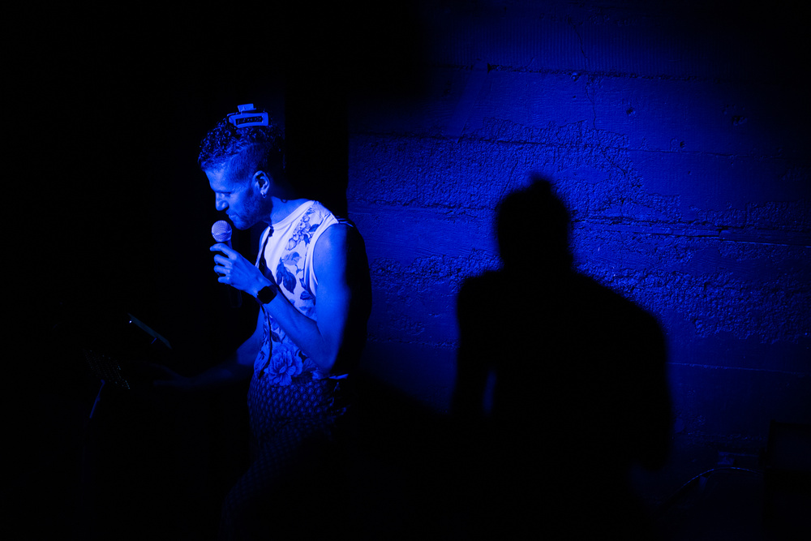
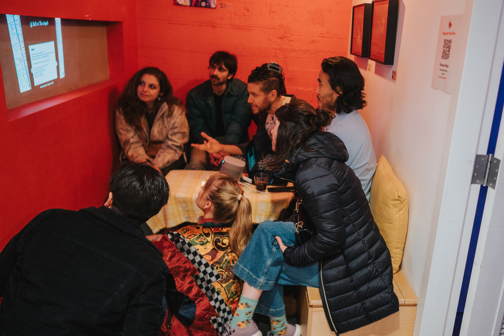
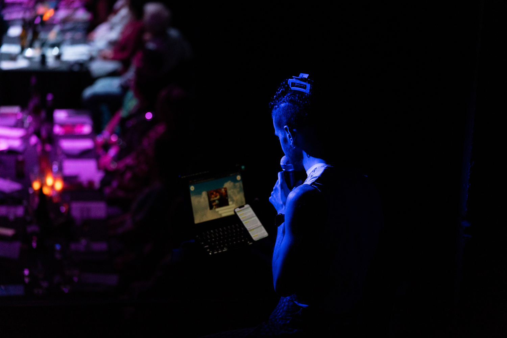
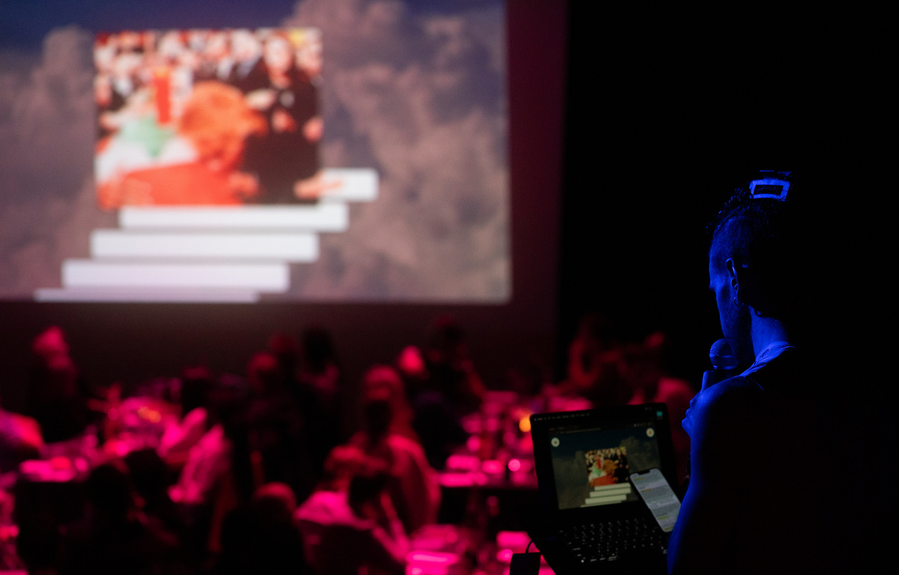
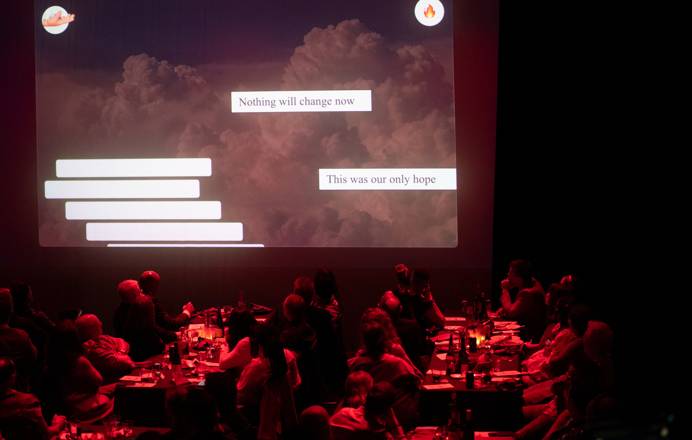

I Live Here





I Live Here begins with a warning. Like Orpheus before us, we are told: do not look back. To descend into the underworld, into memory, into place, is to risk vanishing: ‘Utopia is not the greener grass. It is the stance of those who hold and resist the looping narratives of hope, fatalism, and romanticization.’
The piece unfolds as a katabasis (a ritual descent) woven between two cities: Beirut, where the artist grew up, and San Francisco’s Tenderloin, where he now lives. At its heart is a question: what does it mean to belong to a place built on bones? The descent begins in 2004, with a 15-year-old boy entering BO18, Beirut’s infamous underground nightclub. Built on the site of the Karantina massacre, BO18 is both a bunker and a tomb, its roof opening at night to let the ghosts out. Hanging above the dancefloor are metal spines, reminders of the bodies buried below. Here, the artist kisses a boy for the first time while hiding from his cousin’s gaze. This is the first place where ‘the beat beat differently.’
Years later, the same narrator moves into The Hamilton, an old art deco hotel in the Tenderloin. The building once welcomed Frida Kahlo, perhaps Miles Davis. But in the pandemic era, it becomes an ivory tower overlooking fentanyl collapse and civic abandonment. Down below, the same stories echo: ‘She was our only hope.’ ‘Nothing will change.’ ‘The Tenderloin is special because of the chaos.’ Hope curdles into fatalism. Fatalism into myth. Myth into tribalism.
And still, the story gets weirder.
On Turk Street, an Arab performer in heels declares a Queer Jihad. CounterPulse becomes the new BO. The beat changes again. The artist becomes a resident - not just of the building, but of the city’s deepest rhythm. Each part of I Live Here (performance, map, interview) echoes this rhythm: the pulse that interrupts the pattern, that makes space for stories told at the edge of disappearance. The front yard is not pretty. The neighbors are not happy. But utopia, here, is not prettiness. It’s attention. It’s presence. It’s being in the room long enough to hear what no one else will.
I Live Here is not a story about surviving hell. It’s about listening inside it. Because hell, the piece suggests, is not always punishment - it’s a place where something might still happen. A place that demands we stay alert, stay curious, stay tender. A place we dare to call home. At the end of the performance, the artist invites the audience downstairs, for tea, for testimony, for a moment of shared ground.
‘We live here. And for one evening, so can you.’